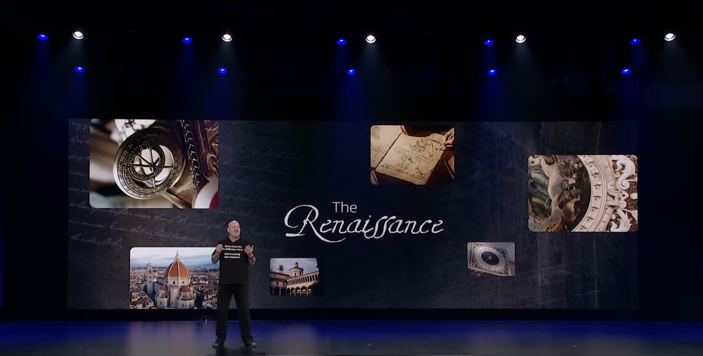
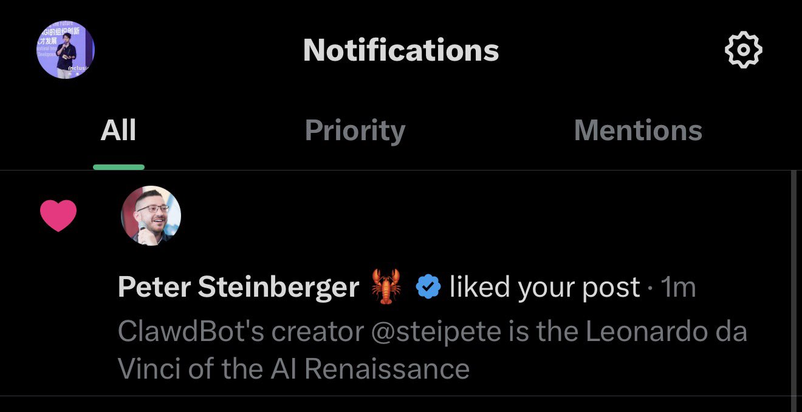

我能制造轻便、坚固、易于搬运的桥梁，可用于进攻和撤退。
我能设计攻城器械、火炮、战船、地下通道和防御工事。
我能处理水利、军事工程和复杂机械，把方案真正落地。
和平时期，我也能完成绘画、雕塑和建筑。
1482 年他写信给米兰公爵 —— 后世公认的第一份简历。
我们把他记成「画家」，但他把自己写成 一个能在工程、水利、解剖、绘画之间自由穿行、把一件事从头做成的人。

500 年前，达·芬奇用画布、齿轮和解剖刀对世界发问；今天的文艺复兴式 Builder，用代码、模型和系统设计继续追问同样的问题：人类还能怎样理解、重构这个世界？

年初我把 @steipete 直接称作「AI 文艺复兴时代的达·芬奇」。
我会被 AI 淘汰吗？绝对不会，只要你不断进化。
头衔不是天经地义的，它是分工的副产品。
过去 250 年，工作越切越细，每切一刀，就多一个 title。AI 是历史上第一次让这条曲线掉头向下。
汇报、中转、协调这些“分工产生的胶水岗位”，正是 AI 最先吃掉的部分。中层被重新定义为“可被自动化的人肉中间件”。
一个人只能有效带 3–8 人——写在生物性里的硬上限。人一多，信息就要有人转述、路由，于是长出中层，科层制是这条生物跨度的产物。而 AI 把汇报、跟踪、协调直接自动化，一个 manager 第一次能管几十人，组织自然少几层。
这就是去 title 化的第二层来源：层级减少以后，用来标记层级的 title 也跟着消失。
3–8 人的上限，是人的上限，不是协调本身的上限。AI 是历史上第一个不受这条生物跨度限制的协调媒介——「信息路由」第一次可以不再由人来做。
当公司变成一个 Intelligence Layer，中层不是变少——是彻底消失。
开环：执行完就没下文，复盘靠开会。闭环：结果立刻回流，系统自我修正。
is_negative:true。愤怒是最诚实的信号——早上线、早被骂、早知道真问题。
每加一个能力（自动化 / agent / 记忆 / 闭环），公司基线永久抬高一截，叠加生效。